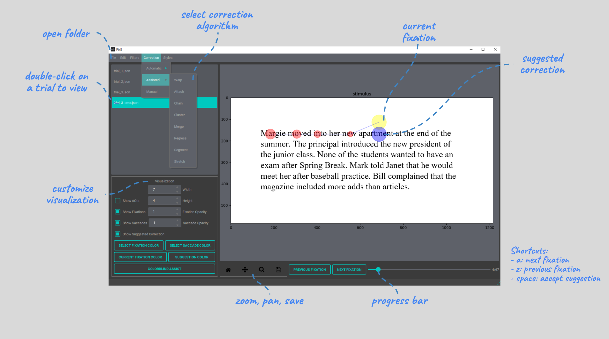

Eye Tracking Data Correction and Preprocessing in Reading Research with Fix8
Join this hands-on tutorial at ETRA 2026 for an end-to-end workflow using Fix8: from raw gaze data and fixation-level errors to corrected, reproducible reading-measure outputs.

Mon, 1 Jun · 8:45 AM – 10:00 AM
Need help setting up Fix8? Stop by Room TANGIS before the tutorial for installation support.
Mon, 1 Jun · 10:30 AM – 12:30 PM
Room TANGIS. A two-hour interactive session with short demos and guided activities.
Marrakech, Morocco
The tutorial will be held during ETRA 2026 in Marrakech, a historic city known for its medina, vibrant public squares, gardens, and rich architectural heritage.
Why this tutorial matters
Eye-tracking data in reading tasks is highly sensitive to small spatial inaccuracies. Even minor drift can lead to incorrect word assignments, distorted fixation measures, and unreliable results. This tutorial focuses on principled, reproducible correction workflows that go beyond black-box approaches—emphasizing transparency, methodological control, and best practices in preprocessing.
What the tutorial will cover
A practical workflow from raw eye-tracking data to corrected, reportable output.
Understanding data errors
Identify spatial drift, distortions, and fixation-level errors in reading data.
Visualization & diagnosis
Use Fix8 to explore gaze data and detect misalignments and anomalies.
Correction workflows
Apply manual, automated, and semi-automated correction strategies.
From data to insights
Export cleaned data, apply filters, and compute reliable reading metrics.
Hands-on, end-to-end workflow
The tutorial combines short presentations with guided exercises. Participants will work directly with real and synthetic datasets, including simulated drift scenarios, to build intuition and practical skills in fixation correction.
- Real and synthetic eye-tracking datasets
- Step-by-step correction exercises
- Integrated visualization + correction workflow
- Best practices for reporting and reproducibility
Who this is for
Researchers and practitioners in eye tracking, HCI, psychology, linguistics, software engineering, education, and vision science—from beginners to experienced users seeking robust preprocessing workflows.
Presenter
Naser Al Madi develops research software and methods for correcting and analyzing eye-tracking data in reading tasks, with applications across software engineering, HCI, and vision research.
Contact: nsalmadi [at] colby.edu
Relevant paper
- Al Madi, N., Torra, B., Li, Y., & Tariq, N. (2025). Combining automation and expertise: A semi-automated approach to correcting eye-tracking data in reading tasks. Behavior Research Methods, 57(2), 72.